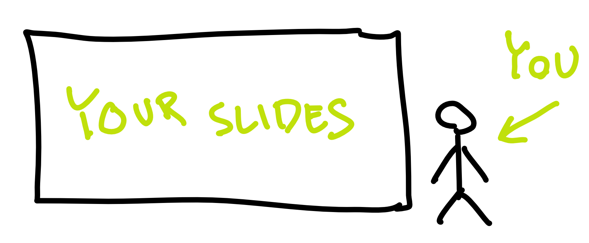
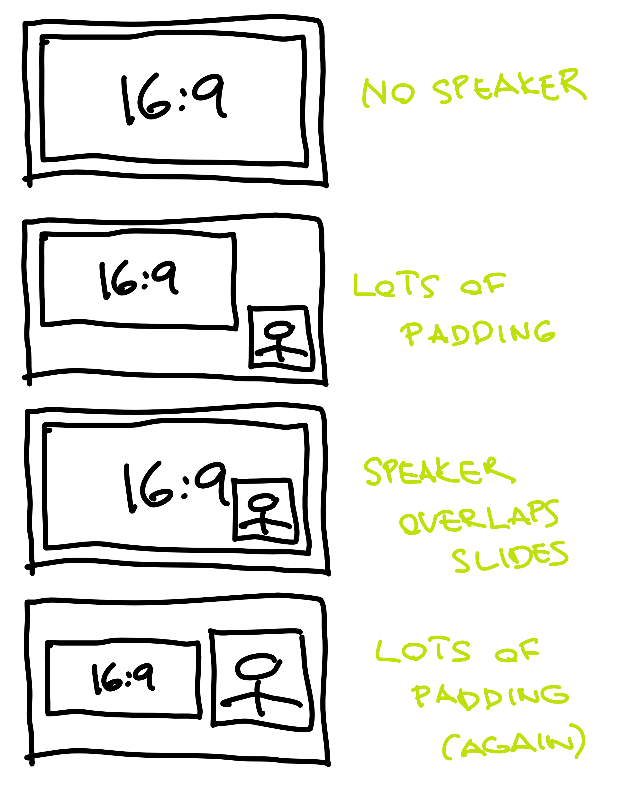
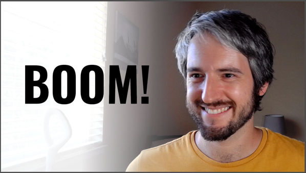
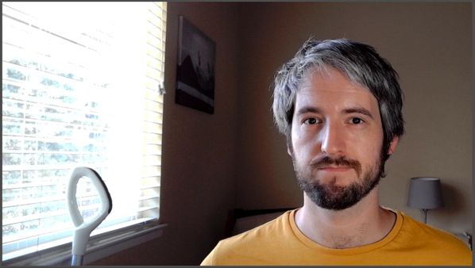
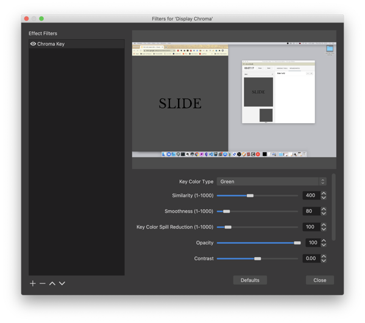
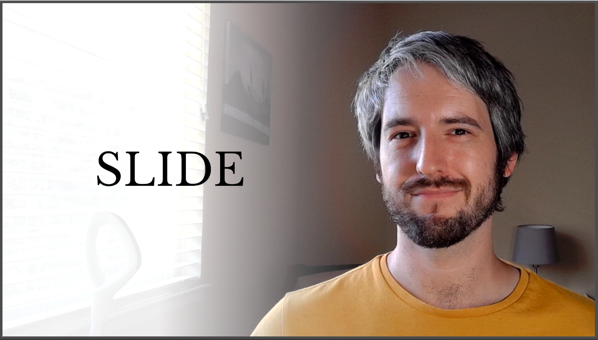
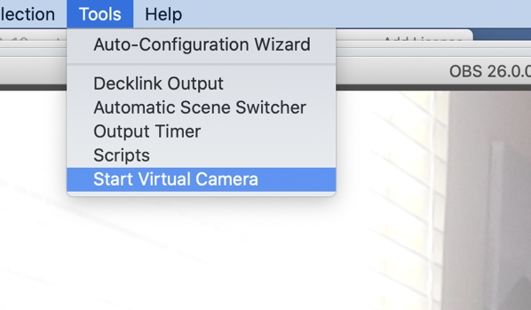

| The Self-Improving Developer |
|---|
| You’ve taught yourself variables, classes, functions, objects. What next? |
Remote Presentations
In 2020, if you’re giving a tech talk, chances are it’s not in person. You’re using something like Zoom, Hangouts, Skype, YouTube or StreamYard. This is generally a good thing: it allows others to learn from you despite a raging pandemic, and it also makes it easier for people in remote places to participate.
But it has obvious downsides: audio/video issues, awkward interactions, and internet connection failures. In this blog post, I’d like to focus on one additional, often overlooked downside: the difficulty to maintain attention.
6 . 1 Driving into the future using only our rearview mirror
A typical person’s view of a tech talk these days is this:

A huge space taken by the presentation, and a small rectangle containing you, the speaker.
This is great if you have a lot of writing on your slides – people can read it better. But, here’s the thing: you should almost never have lots of writing on your slides. Slides are not the messenger, you are. Slides are auxiliary. They should contain a phrase, a tiny piece of code, a simple diagram, a graph, or a picture. Something the audience can fully comprehend in two seconds. Otherwise, the audience will be trying to comprehend the slides while you talk, which will make them miss parts of what you’re saying. If this goes for long enough, you will lose them as an audience. At that point, you’re better of just sending them the slides to read on their own.
Let’s also address the fact that you’re a small rectangle tucked away next to your humongous slides. It’s really hard to maintain attention looking at a static slide. It’s much easier to maintain attention looking at a person. We’re humans. That’s what our brains do. They read other people’s faces. We can’t help being mildly entertained looking at another person’s face (assuming it’s reasonably animated).
So, basically, the current setup of online presentations is terrible.
But we can’t blame the aforementioned virtual meeting services (Zoom etc.) for this. The problem is with our presentations.
Up until now, it made perfect sense to have presentations take up the whole area of an average screen. This is because presentations were given in person, so the only thing on the screen was the presentation, and the speaker was next to the screen.

For this reason, most presentation software (Powerpoint, Slides, Keynote) defaults to 16:9 aspect ratio for slides (4:3 in the old days).
Now that the screen must be shared between the speaker and her slides, that same aspect ratio is no longer a good idea. Here are some configurations of a sitting speaker and her presentation, as seen on someone’s monitor through YouTube or Zoom.

None of the configurations is ideal. Either the presenter is tiny, or the presenter is overlapping their own slides, or the presentation is too small. In almost all cases, much of the screen real estate is just padding, and the human face is way too small to hold attention.
Said with Marshal McLuhan, we “drive into the future using only our rearview mirror”. We have all this technology but we’re using it the way it was used in the past. This is a time ripe for innovation.
6 . 2 The ideal remote presentation
As a member of the audience, I want to have something to latch on when seeing a remote presentation. A mostly-static slide deck is not it. A miniature of the speaker is not it. Lot’s of padding — not it.
How about seeing the presenter full screen? If she needs to show some auxiliary content (live coding, short texts, diagrams), why not overlay it on top of her webcam view?

This is what my setup is all about. It is also close to what the people at mmhmm.app seem to be going for, so if any of the following seems a bit too much and you’re not in a hurry, you may want to just wait until they have a public product. (Full disclosure: I don’t have access to their software, so I’m only guessing what they’re going for through their marketing content. Most of it seems a bit gimmicky but I assume that’s just noise that will later be filtered out.)
6 . 3 The basics
Before I start talking about boring stuff like chroma key settings in OBS, I want to give an overview. That way, even people who couldn’t care less about actually implementing this stuff on their end can see the idea.
We start by making our slides way narrower than the default. Every presentation program lets you set up the size or aspect ratio of your slides. If your slides are more custom (an HTML presentation, a custom app, etc.), you probably have it even easier: just resize the window.

I’m going with 1:1. In other words, square. This is, to be honest, completely arbitrary. I could have gone with 1:1.2 or 1.5:1. Maybe I will in the future. I guess, for now, a square is just easier to reason about.
I’ve found that the narrower slide makes me think more about what to put on it. In other words, I’m less likely to put a bunch of random ideas on a slide. I think it makes the presentation more crisp.
I could end here and just have a 1:1 presentation on the left, and the rest of the screen filled with my face. Like this:

But I’ve found that doesn’t really cut it. The two sections of the screen are not a pleasing look, especially when they’re part of an already-tiled screen (such as a Zoom meeting).
So I go a step furter, and overlay the contents of the slide. I use the oldest trick in TV: greenscreen. My slides have a green background, and my streaming software is set up to make the green parts of the slides transparent. To make the whole thing a tiny bit nicer and readable, I also introduce a subtle white gradient behind the slides. This gradient co-incides with my window, so it looks natural.
And boom:
6 . 4 How to do it
All of the following assumes you have a reasonably fast computer. Video conferencing in general is quite computationally intensive. (Ask my previous computer, a high-end MacBook Pro with some hardware cooling issue, which routinely went to single-digit FPS because of a simple video call.) The additional processing is yet another layer of CPU load, so think about that.
I’m going to describe (and screenshot) my OBS setup on MacOS, but it should be easy enough to translate all of this to other streaming software and other operating systems.
6 . 4 . 1 Step 1: Narrower slides
This was discussed before. In Google Slides, this is a setting in File > Page Setup.
6 . 4 . 2 Step 2: Green background
Go to you slide software and change the background of the master slide
to pure green (hex #00FF00).

Alternatively, do something similar with your custom presentation software or even your IDE. Whatever you want transparent, make it green.
6 . 4 . 3 Step 3: Create a new scene
In OBS, this is as simple as clicking the + in the scene list, and
naming it.
6 . 4 . 4 Step 4: Add webcam input
Add your webcam input (“Video Capture Device”) as a source. It’s important that your webcome is close to where you’ll be looking when presenting. For example, if you have two monitors, place the webcam on top of the monitor that will be your primary when presenting.
Fill the scene with the webcam video, but try to position yourself so that you’re to the side. Remember, you need some room for the slides. We’re trying to keep your face visible all the time, but it doesn’t need to be the centerpiece of your stream.
6 . 4 . 5 Step 5: Add screencast
In OBS, this is called “Display Capture”. This lets you share your screen. I recommend sharing the screen instead of sharing a single window, because it’s more versatile. If you only share a single window (“Window Capture” in OBS), you can’t just pop over some small dialog that you want to show to the audience. Crucially, at least on a Mac, sharing a window also gets much lower framerates than sharing the whole screen.

You’ll want to crop that screencast so that it only shows the area your slides fill.

6 . 4 . 6 Step 6: Apply chroma key
Tap on the new “Display Capture” source and push “Filters”. Add a new “Chroma Key” filter.
Chroma key is a fancy name for “removing pixels of a certain color”. Chroma means “purity or intensity of color”. Impure green won’t be transparent, but pure green will. This is exactly what they’ve been using in film and television for decades.
As an aside, you could also use “Color Key” or “Luma Key”, but I’ve found “Chroma Key” to be best and most idiot-proof.
You can play around with the settings on the filter until you’re happy. I think the default settings are decent. I think I fiddled a bit with the “Smoothness” and “Spill Reduction” settings. Play it by ear.

6 . 4 . 7 Step 7: Add a gradient
Create a gradient in your favorite image editing software. Your goal is to have a PNG file that is filled with a single color (white, black, or whatever else you want), and gradually goes from fully (or almost fully) opaque on one side to fully transparent at about two thirds of the width.

Put this PNG file as an image between the “Display Capture” and the webcam input.
 The idea is not to be too on-the-nose about it, but still increase legibility of your content.6 . 4 . 8 Step 8: Use it
If you’re streaming to YouTube or Twitch, you’re already done. Your
streaming software (e.g. OBS) can just send the stuff to the streaming
service’s ingestion server.
If you want to use this setup in Zoom, Meet, StreamYard, Skype, and similar webcam-only software, you need to make your operating system think that your streaming software is a webcam. Thankfully, this is easy in OBS. You download and install a plugin called OBS Virtualcam (Mac version), restart OBS, and start the virtual webcam using Tools > Start Virtual Camera.
Next, you might need to restart your meeting software (Zoom, Skype, or the browser that runs Meet or StreamYard), but after that, you’re set. The webcam settings now have a new camera called something like “OBS”, and that’s the output from OBS with all those setting we just did.
Congrats, you’re done! Enjoy giving more engaging presentations.